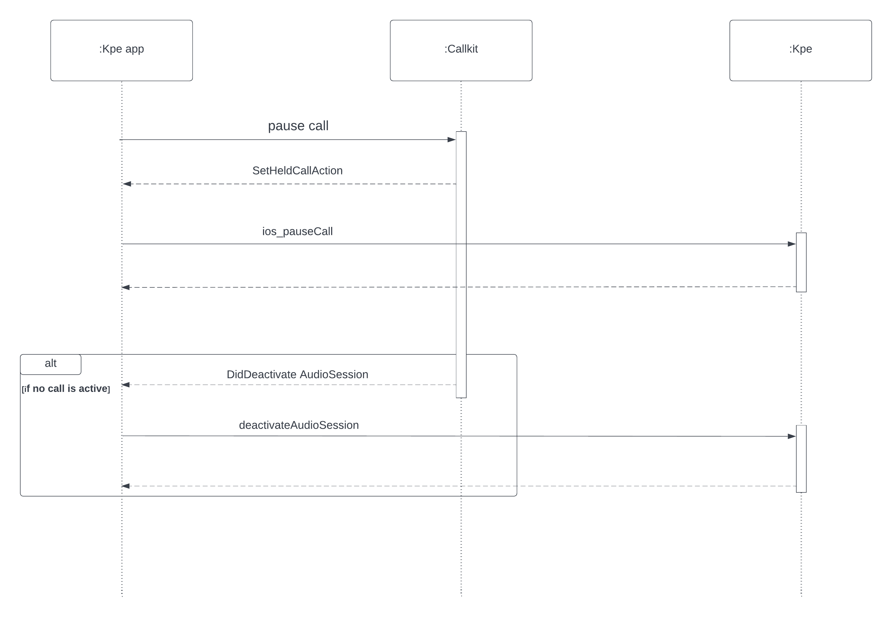
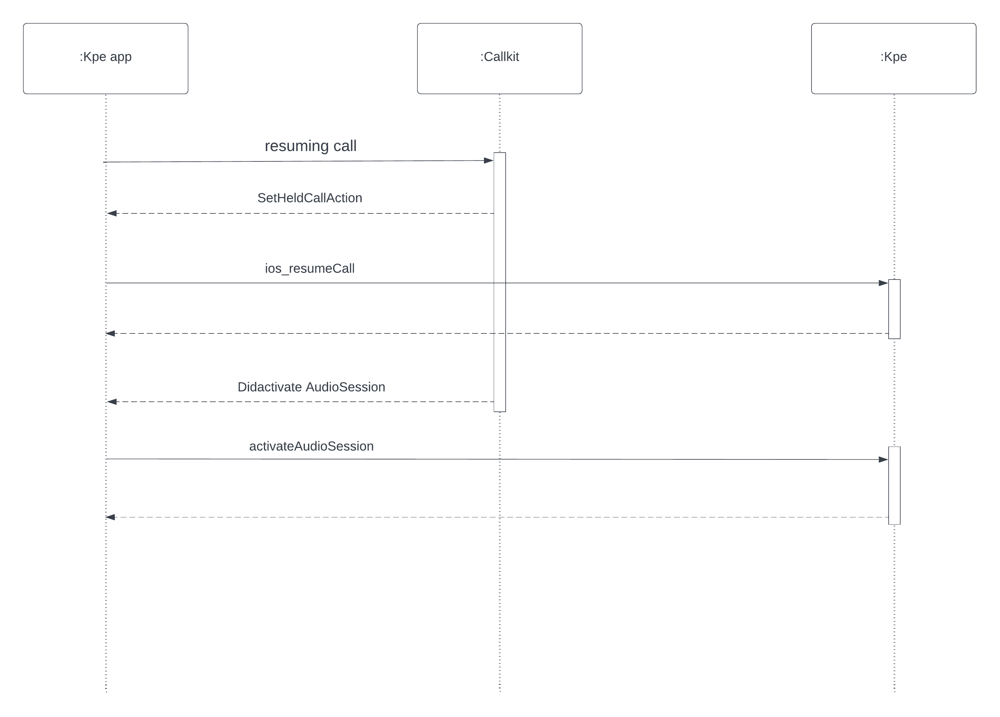

Pause/Resuming call
To better integrate the callkit subsystem of ios, with the pause and resume of the call,
the kpe api for managing the pause and resume of the call must be called in certain callbacks that callkit provides us.
Pause a call
If the developer wants to pause a call, before calling the kpe api related to the pause, he must perform the following steps:
- Perform a transaction with action CXSetHeldCallAction.
-
In the provider(_ provider: CXProvider, perform action: CXSetHeldCallAction)
callkit's callback, the kpe api to pause the call ios_pauseCallOnLine with the line associated to the call should be invoked.
- If all voip calls are "holded" then callkit's callback provider(_ provider: CXProvider, didDeactivate audioSession: AVAudioSession) is invoked
- In the callback's body the kpe api activateAudioSession(isActivate: false)must be invoked
Below the sequence diagram

Resuming a call
If the developer wants to resuming a call, before calling the kpe api related to the pause, he must perform the following steps:
- Perform a transaction with action CXSetHeldCallAction.
-
In the provider(_ provider: CXProvider, perform action: CXSetHeldCallAction)
callkit's callback, the kpe api to pause the call ios_resumeCallOnLine with the line associated to the call should be invoked.
- The callkit's callback provider(_ provider: CXProvider, didActivate audioSession: AVAudioSession) is invoked
- In the callback's body the kpe api activateAudioSession(isActivate: true)must be invoked
Below the sequence diagram

 1.15.0
1.15.0